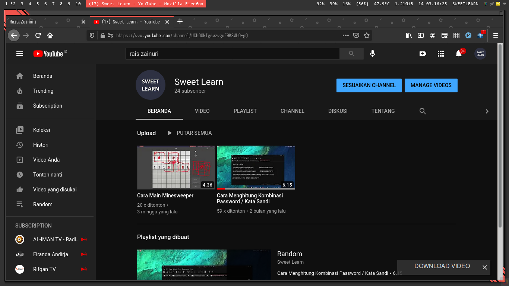

An Android Developer and Linux Enthusiast
Rais Zainuri, live in West Java, Indonesia. Born in June, 2000. Now, currently studying at a university in Tasikmalaya. Interested in Android and Desktop programming. Swimming and cycling is his hobby. He like something about Linux, like Desktop Art Customization.
See more about him at
github,
linkedIn and
instagram.
raiszainuri09@gmail.com, t.me/raiszainuri is his contact.
raiszainuri09@gmail.com, t.me/raiszainuri is his contact.
Youtube
He also has a YouTube channel, with the channel name Sweet Learn. You can see it on the following link YouTube
.dotfiles
Create a repository on github, regarding dotfiles or configuration used on the linux desktop. You can check here My Dotfiles.
My Gear:
- OS : Arch Linux
- WM : i3
- DE : xfce4
- File Manager : thunar, ranger
- Terminal : kitty, xfce4-terminal
- Bar : polybar
- Media Player : mpv
- Video Editor : kdenlive
- Audio Editor : audacity
- Note : zim
- Image Viever : eye-mate, feh
- Text Editor : code/OSS, neovim
- Compositor : picom
- Web Browser : firefox
- PDF Viewer : firefox
- Image Editor : gimp
- Vector Editor : inkscape
- Document Viewer : libreoffice
- Video Recorder : simplescreenrecorder
- Process Manager : bpytop